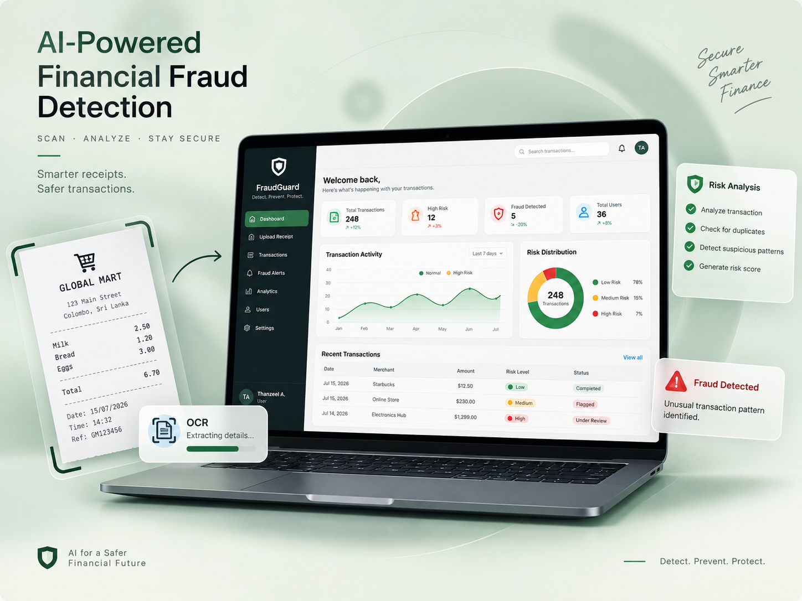

01AI / FULL-STACK DEVELOPMENT
Mentora AI — Student Personal Assistant
An AI-powered student workspace that helps students organize their studies, learn from their own notes, generate revision material, plan study sessions, practise for exams and track learning progress.
Read case study
- Problem
- Manual transaction review is slow and makes suspicious activity harder to identify.
- My role
- Full-stack development, UI/UX implementation, backend API development, OCR integration, database design and fraud-risk logic.
- Solution
- Built a React + FastAPI platform with receipt OCR, editable transaction extraction, duplicate detection, risk scoring, and ML-based fraud prediction.
- Result
- A responsive fraud-monitoring system that automates receipt processing and highlights risky transactions.